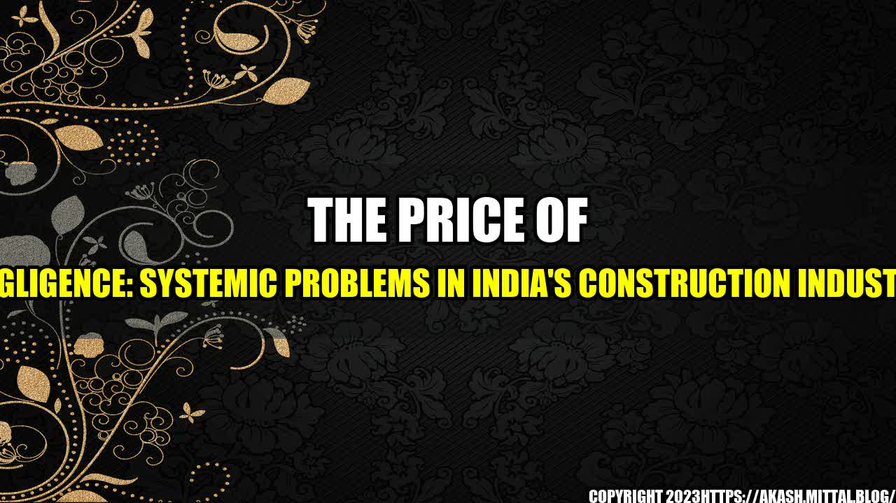

The Price of Negligence: Systemic Problems in India's Construction Industry
Posted on May 8th, 2021 | Category: Business & Finance
The Unfortunate Truth
It was a cool winter afternoon and the sun was setting, casting a golden glow over the city of Mumbai. However, the peacefulness was shattered when a construction worker fell to his death from the 12th floor of a building under construction. It was yet another accident in India's construction industry, which has seen a spate of accidents over the past few years. In December 2020, at least 15 workers died in a fire that broke out at a building construction site in Gujarat. In November 2019, a 70-year-old building collapsed in Mumbai, killing over 20 people.
India's construction industry has grown significantly in recent years, but the sector has numerous systemic problems that are restricting its growth further. From poor compliance with safety regulations to a lack of skilled workers, there are many factors that contribute to these accidents.
The Root Causes
One of the primary reasons for accidents in India's construction sector is weak regulations and poor enforcement. The country's safety regulations are outdated and not adequately enforced, making it easy for construction companies to take shortcuts and ignore workers' safety. There is also a weak culture of safety among construction companies, with many companies treating safety as an afterthought rather than a priority.
Another issue is the lack of skilled workers in the construction industry. Despite the growing demand for construction workers, there is a significant shortage of skilled workers in the sector. Faced with a shortage of skilled workers, many construction companies resort to hiring unskilled workers who have little or no training in safety measures. This puts not only the workers' lives at risk but also those of the people who live or work in the buildings being constructed.
Finally, corruption is another significant issue that plagues the construction industry. Contractors often pay bribes to officials to get building permits and approvals, which leads to shoddy workmanship and weak safety standards.
Case Studies
One of the most prominent examples of a systemic problem in India's construction industry is the collapse of the flyover in Kolkata in 2016. The incident occurred when a section of an under-construction flyover collapsed, killing at least 26 people and injuring over 80. The collapse was attributed to poor construction practices, substandard materials, and the use of unskilled labor.
Similarly, in 2017, at least 16 people were killed and several others injured in a building collapse in Mumbai. The incident occurred when a four-story building, which was being used as a nursing home, collapsed. The collapse was attributed to weak construction practices, illegal modifications, and a lack of proper maintenance.
Conclusion
India's construction industry has been in the news for all the wrong reasons, with accidents and collapses making headlines regularly. The sector's growth is being hampered by systemic problems like poor safety regulations, a lack of skilled workers, and corruption. To address these issues, the government needs to update the safety regulations, ensure proper enforcement and accountability, and invest in training programs to develop skilled workers. Construction companies have a significant role to play in this and should prioritize safety and ethical practices to ensure the well-being of all involved.
Hashtags:
- #IndiaConstructionAccidents
- #ConstructionIndustrySafety
- #CorruptionInConstruction
- #BuildingCollapse
Curated by Team Akash.Mittal.Blog
Share on Twitter Share on LinkedIn